Considere o problema de calcular a área entre uma função positiva, o eixo x e as retas x = a e x = b. O valor exato dessa área é calculada fazendo uma aproximação por retângulos com bases iguais e depois tomando o limite quando o número de retângulos tende ao infinito:
 é o tamanho da base dos retângulo e f(xi), 1 ≤ i ≤ n,
a + (i − 1)h ≤ xi ≤ a + ih, é a altura dos retângulos. Essa definição é
generalizada para cálculo de integrais num intervalo [a,b]:
é o tamanho da base dos retângulo e f(xi), 1 ≤ i ≤ n,
a + (i − 1)h ≤ xi ≤ a + ih, é a altura dos retângulos. Essa definição é
generalizada para cálculo de integrais num intervalo [a,b]:
Os valores aproximados para a integral são dados na tabela:
|
|
Observe que
|
|
A integral de uma função num intervalo [a,b], também chamada de quadratura numérica, é aproximada pela soma:
|
|
onde xi, 1 ≤ i ≤ n, são pontos distintos do intervalo [a,b]. Nesta definição, a integral ∫ 02(x2 + 1)dx usando uma aproximação por retângulo usa apenas um ponto, o ponto médio do intervalo (x1 = 1), e a soma se reduz a uma parcela ((2 − 0)f(1)). A fórmula geral para essa caso, chamado de regra do ponto médio é:
|
| (7.7) |
A regra do ponto médio (7.7) pode ser deduzida mais formalmente usando a expansão de Taylor
| ∫ abf(x)dx | = hf(x 1) + f′(x1) ∫ ab(x − x 1)dx + f′′(η) ∫ ab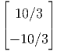(x − x1)2dx | ||
| = hf(x1) + f′(x1)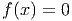ab + f′′(η)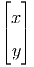ab | |||
| = hf(x1) + f′(x1)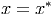 | |||
| + f′′(η)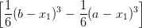 | |||
| = hf(x1) + 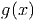. |
Exemplo 7.3.1. Use a regra do ponto médio para aproximar a integral
Usando o intervalo [0,1], temos h = 1 e x1 = 1∕2. A regra do ponto médio resulta em
A forma natural de obter as regras de integração é usar o polinômio de Lagrange que passa pelo pontos {(xi,f(xi))}i=1n

A regra do trapézio consiste em aproximar a integral por um trapézio em vez de um retângulo, como fizemos. Para isso, o polinômio de Lagrange deve ser uma reta, como mostra a figura.
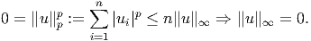
O polinômio de Lagrange de primeira ordem que passa por (x0,f(x0)) := (a,f(a)) e (x1,f(x1)) := (b,f(b)) é dado por
|
|
Pelo teorema do valor médio, existe a ≤ η ≤ b tal que ∫ abf(ξ(x))g(x)dx = f(η) ∫ abg(x)dx e, portanto,
![[ ] [ ]
∫ b (x − x0)2 x1 (x − x1 )2 x1
f(x)dx = f(x0) --------- − f(x1) ---------
a [ 2h x0 2]h x0
f′′(η) x3 x2 x1
+ ------ ---− ---(x1 + x0) + x0x1x
2 3 2 x0
(x1 − x0)2 (x0 − x1 )2
= f(x0)---------- + f(x1) ----------
′′ ( 23h 2 2h 3 2 )
+ f-(η)- x-1− x1(x + x ) + x x x − x-0+ x0(x + x ) − x x x
2 3 2 1 0 0 1 1 3 2 1 0 0 1 0
2 2
= f(x0)h--+ f(x1)h--
2h 2h
f′′(η)2x31 −-3x21(x1 +-x0) +-6x21x0 −-2x30 +-3x20(x1-+-x0) −-6x1x20
+ 2 6
h f′′(η)( )
= -(f (x0) + f (x1)) +------ x30 − 3x20x1 + 3x21x0 − x31
2 12
h- h3f′′(η)-
= 2(f (x0) + f (x1)) − 12](main1153x.png) |
Exemplo 7.3.2. Use a regra do trapézio para aproximar a integral
Usando o intervalo [0,1], temos h = 1, x0 = 0 e x1 = 1. A regra do trapézio resulta em
| ∫ 01e−x2 dx | ≈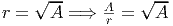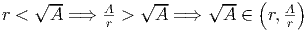 + 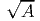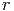 | ||
| = 0,4447002 + 0,2866701 = 0,7313703. |
| ∫ 01e−x2 dx | ≈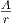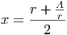 + 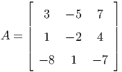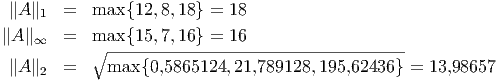 | ||
| + 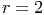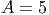 + 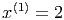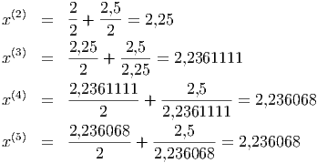 | |||
| = 0,7429841 |
A regra de Simpson consiste em aproximar a integral usando três pontos do intervalo:
|
|
Se usarmos o mesma metodologia da regra dos trapézios, calcularemos
![∫ b [ (x − x )2 f ′′(x )
f (x )dx = f(x1 )(x − x1 ) + f ′(x1)-----1-- + -----1-(x − x1)3
a ] 2 6
f′′′(x1) x2
+ -------(x − x1 )4
24 x0
-1-∫ x2 (4) 4
+ 24 x f (ξ(x ))(x − x1) dx,
0](main1173x.png) |
Pelo teorema do valor médio, existe x0 ≤ η ≤ x2 tal que
![∫ b [ (x − x )2 f ′′(x )
f (x )dx = f(x1 )(x − x1 ) + f ′(x1)-----1-- + -----1-(x − x1)3
a 2 6
f ′′′(x1) ]x2
+ -------(x − x1)4
24 x0
f(4)(η )∫ x2
+ ------- (x − x1)4dx
[ 24 x0
′ (x-−-x1)2 f-′′(x1-) 3
= f(x1 )(x − x1 ) + f (x1) 2 + 6 (x − x1)
′′′ ]x2
+ f--(x1)(x − x )4
24 1
(4) x0
+ f---(η-)[(x − x )5]x2
120 1 x0](main1174x.png) |
Usando o fato que


Exemplo 7.3.3. Use a regra de Simpson para aproximar a integral
Usando o intervalo [0,1], temos h = 1∕2, x0 = 0, x1 = 1∕2 e x2 = 1. A regra de Simpson resulta em
Vimos que em todas as estimativas de erro que derivamos, o erro depende do tamanho do intervalo de integração. Uma estratégia para reduzir o erro consiste em particionar o intervalo de integração em diversos subintervalos menores:
|
|
onde xi = a + (i − 1)h, h = (b − a)∕n e i = 1,2,…,n + 1, sendo n o número de subintervalos da partição do intervalo de integração. Depois, aplica-se um método simples de integração em cada subintervalo.
A regra composta dos trapézios assume a seguinte forma:
| ∫ abf(x)dx | = ∑ i=1n ∫ xixi+1 f(x)dx | ||
| ≈∑ i=1n |
| ∫ abf(x)dx | ≈ ∑ k=1Ni | ||
| = | |||
| = + h∑ i=2Ni f(xi) |
O código Scilab abaixo é uma implementação do método do trapézio composto para calcular:
|
|
onde h = (b−a)∕n e xi = a + (i− 1)h, i = 1,2,…,n + 1. Os parâmetros de entrada são: f o integrando definido como uma função no Scilab, a o limite inferior de integração, b o limite superior de integração, n o número de subintervalos desejado. A variável de saída é y e corresponde a aproximação calculada de ∫ abf(x)dx.
Já a regra composta de Simpson assume a seguinte forma:
| ∫ abf(x)dx | = ∑ k=1n ∫ xkxk+1 f(x)dx | ||
| ≈∑ k=1n |
|
|
onde, agora, h = (b − a)∕(2n), xi = a + (i − 1)h, i = 1,2,…,2n + 1.
O código Scilab abaixo é uma implementação do método de Simpson composto para calcular:
|
|
onde h = (b − a)∕(2n) e xi = a + (i − 1)h, i = 1,2,…,2n + 1. Os parâmetros de entrada são: f o integrando definido como uma função no Scilab, a o limite inferior de integração, b o limite superior de integração, n o número de subintervalos desejado. A variável de saída é y e corresponde a aproximação calculada de ∫ abf(x)dx.
Exemplo 7.3.4. Calcule numericamente a integral
![|----|-------------|----------|-----------|
|-n--|ponto-m-édio-|Trapézios-|-Simpson---|
| | | | |
|-1--|-5,4365637---|218,3926--|76,421909--|
| | | | |
|-2--|-21,668412---|111,91458-|51,750469--|
| 3 | 31,678746 |80,272022 |47,876505 |
|----|-------------|----------|-----------|
| 6 | 41,755985 |55,975384 |46,495785 |
|----|-------------|----------|-----------|
|12 | 45,137529 |48,865685 |46,380248 |
|----|-------------|----------|-----------|
|24 | 46,057757 |47,001607 |46,372373 |
|----|-------------|----------|-----------|
|48--|-46,292964---|46,529682--|-46,37187--|
| | | | |
|96--|-46,352096----46,411323---46,371838--
| |](main1201x.png) |
O método de Romberg é um método simplificado para construir quadraturas de alta ordem.
Considere o método de trapézios composto aplicado à integral

Teorema 7.3.1. Se f(x) é uma função analítica no intervalo (a,b), então a função I(h) admite uma representação na forma
Para um demonstração, veja [4]. Em especial observamos que
A ideia central do método de Romberg, agora, consiste em usar a extrapolação de Richardson para construir métodos de maior ordem a partir do métodos dos trapézios para o intervalo (a,b)
Exemplo 7.3.5. Construção do método de quarta ordem.

A partir de agora, usaremos a seguinte notação
Observamos que os pontos envolvidos na quadratura Rk,1 são os mesmos pontos envolvidos na quadratura R(k − 1,1) acrescidos dos pontos centrais, assim, temos a seguinte fórmula de recorrência:
Definimos Rk,2 para k ≥ 2 como o esquema de ordem quatro obtido da fórmula do exemplo 7.3.5:
Similarmente os valores de Rk,j são os valores obtidos pela quadratura de ordem 2j obtida via extrapolação de Richardson. Pode-se mostrar que
Exemplo 7.3.6. Construa o esquema de Romberg para aproximar o valor de ∫ 02e−x2dx com erro de ordem 8.
O que nos fornece os seguintes resultados:
Ou seja, temos:
|
|
usando uma aproximação de ordem 8.
Exemplo 7.3.7. Construa o esquema de Romberg para aproximar o valor de ∫ 02x2ex2dx com erro de ordem 12.
O que nos fornece:
![|----------|----------|-----------|----------|-----------|----------|
| | | | | | |
|218,3926--|----------|-----------|----------|-----------|----------|
| | | | | | |
|111,91458-|76,421909-|-----------|----------|-----------|----------|
|66,791497 |51,750469 |50,105706 | | | |
|----------|----------|-----------|----------|-----------|----------|
|51,892538 |46,926218 |46,604601 |46,549028 | | |
|----------|----------|-----------|----------|-----------|----------|
|47,782846 |46,412949 |46,378731 |46,375146 |46,374464 | |
|----------|----------|-----------|----------|-----------|----------|
|46,72661--|46,374531---46,37197---46,371863---46,37185---444666,,,333777111888444777--
| |](main1217x.png)
Ou seja, temos:
|
|
com uma aproximação de ordem 12.
Todos os métodos de quadratura que vimos até o momento são da forma
![[ ( ) ]
∫ b a + b b − a
a f (x)dx ≈ f (a) + 2f --2-- + f (b) --4--
( )
b −-a b −-a a +-b b-−-a
= 4 f(a) + 2 f 2 + 4 f (b)
3
∑
:= w1f (x1) + w2f (x2) + w3f (x3) = wjf (xj)
j=1](main1221x.png)
![[ ( ) ( )
∫ b 3a + b a + b
f(x)dx ≈ f(a) + 4f ------- + 2f -----
a ( ) 4 ] 2
a +-3b- b −-a
+ 4f 4 + f(b) 12
( ) ( )
b-−-a b-−-a 3a-+-b- b −-a a-+-b
= 12 f (a ) + 3 f 4 + 6 f 2
( )
+ b-−-af a +-3b- + b-−-a f(b)
3 4 12
5
:= ∑ wjf (xj)
j=1](main1223x.png)
A principal técnica que temos usado para desenvolver os métodos numéricos é o polinômio de Taylor:
Integrando termo a termo, temos:

Neste momento, é natural investigar o desempenho de um esquema numérico aplicado a funções do tipo f(x) = xn.
Definição 7.3.1. A ordem de precisão ou ordem de exatidão de um esquema de quadratura numérica como o maior inteiro positivo n para o qual o esquema é exato para todas as funções do tipo xk com 0 ≤ k ≤ n, ou seja, Um esquema é dito de ordem n se

Exemplo 7.3.9. A ordem de precisão do esquema de trapézios é 1:
| (k = 0) : ∑ j=1nw j = b − a | |||
| (k = 1) : ∑ j=1nw jxj = (a + b) = | |||
| (k = 2) : ∑ j=1nw jxj2 = (a2 + b2)≠ |
Exemplo 7.3.10. A ordem de precisão do esquema de Simpson é 3:
 , x1 = a, x2 = e x3 = b
, x1 = a, x2 = e x3 = b
| (k = 0) : ∑ j=1nw j = (1 + 4 + 1) = b − a | |||
(k = 1) : ∑
j=1nw
jxj = (a + 4 + b) = (a + b) = + b) = (a + b) = | |||
(k = 2) : ∑
j=1nw
jxj2 = (a2 + 42 + b2) = = | |||
| (k = 3) : ∑ j=1nw jxj3 = (a3 + 43 + b3) = | |||
| (k = 4) : ∑ j=1nw jxj4 = (a4 + 44 + b4)≠ |
Exemplo 7.3.11. Encontre os pesos wj e as abscissas xj tais que o esquema de dois pontos
Solução. Temos um sistema de quatro equações e quatro incógnitas dado por:
Da segunda e quarta equação, temos:
Esse esquema de ordem de precisão três e dois pontos chama-se quadratura de Gauss-Legendre com dois pontos:
A quadratura de Gauss-Legendre de n pontos é o esquema numérico

![|---|------------------|--------|
| | | |
|n--|-------xj---------|--wj----|
| | | |
| | | |
|1 | 0 | 2 |
| | | |
| | | |
|---|------------------|--------|
| | | |
| | √3- | |
|2 | ± -3- | 1 |
| | | |
|---|------------------|--------|
| | | |
| | | |
| | 0 | 8 |
| | | 9 |
|3 | | |
| | ∘ -- | |
| | ± 35 | 59 |
| | | |
|---|------------------|--------|
| | | |
| | ∘ ---------------| |
| | ∘ | 18+-√30 |
| |± (3 − 2 6∕5)∕7 | 36 |
|4 | | |
| | ∘ ------∘--------| √-- |
| |± (3 + 2 6∕5)∕7 | 18−--30 |
| | | 36 |
| | | |
|---|---------------------------
| |](main1261x.png) |
Solução.
|
|
No Scilab:
♢
Solução.
♢
Solução. Para tanto, fazemos a mudança de variáveis u = 2x − 1:
|
|
E, então aplicamos a quadratura gaussiana nesta última integral.
♢
![|----------|----------------|-------------|----------------|-------------------|
| f(x) | Exato | Trapézio | Simpson |Gauss-Legendre (2) |
|----------|----------------|-------------|----------------|-------------------|
| | | | | |
| | − 1 | −1 | e−1 + 4e0 + e1 | − −√3 √3- |
| ex | e− e | e + e | ------3------- | e 3 + e 3 |
| | ≈ 2,35040 | ≈ 3,08616 | | ≈ 2,34270 |
| | | | ≈ 2,36205 | |
| | | | | |
|----------|----------------|-------------|----------------|-------------------|
| | | | | |
| | 16 4√ -- | | | |
|x2∘3-+-x3-| 9 − 9 2 | 3,41421 | 1,13807 | 1,15411 |
| | ≈ 1,14924 | | | |
| | | | | |
| | | | | |
|----------|----------------|-------------|----------------|-------------------|
| | | | | |
| 2 x3 | e−-e−1- | | | |
| x e | 3 ≈ 0,78347 | 3,08616 | 1,02872 | 0,67905 |
| | | | | |
|----------|-------------------------------------------------------------------
| |](main1258x.png)